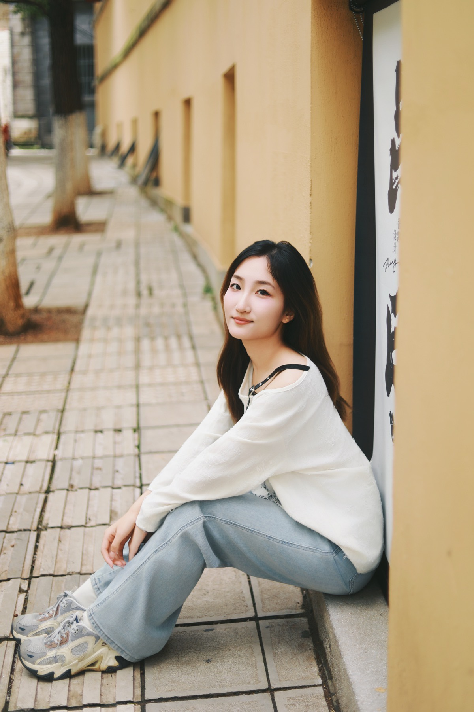
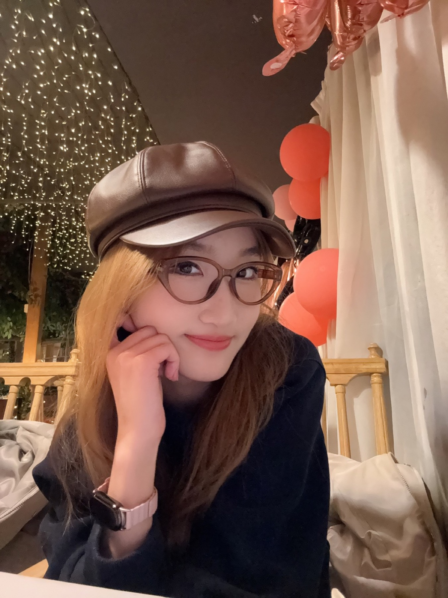

EDU / 2024 - NOW
Hunan University
International Economics & Trade
Undergraduate
3.94 / 4.0 GPATOP 3 IN MAJOR
National Scholarship
Outstanding Student
Outstanding Youth League Member
VOL. 01 / 2026 / HUNAN

A curious mind
with a notebook full
of possibilities.
01 / ABOUT ME
Nice to meet you!
I'm Yuna Cheng, an International Economics and Trade student at Hunan University. I enjoy following a question until it has a shape, a direction, and somewhere useful to go.
I bring observation, follow-through, and a willingness to learn in public. The work is often in the details. I happen to like the details.

02 / THE LEARNING FILE
Building a foundation is still one of my favorite things to do.
EDU / 2024 - NOW
International Economics & Trade
Undergraduate
National Scholarship
Outstanding Student
Outstanding Youth League Member
Student practice department
Research competitions
Public speaking
Field-based teamwork
03 / WORK & PROJECTS
Tap a card to bring it forward.
2026.05 / INNOVATION
Co-developed a national undergraduate innovation project's research framing, structure, and proposal.
Research design / initiative2026.03 / MARKET RESEARCH
Worked across survey design, data processing, and report writing.
Third prize / data handling2025.07 / CCB BRANCH
Supported customers and service flows with zero material-review errors.
Service / accuracy2025.02 / CHALLENGE CUP
Cleaned panel data for research into digital rural development.
Gold award / analysis04 / OFF THE CLOCK
Street corners, night lights, long walks, and a camera roll that becomes a diary.
PHOTOGRAPHY · MOVEMENT · SMALL JOYS · BIG QUESTIONS · PHOTOGRAPHY · MOVEMENT · SMALL JOYS ·
05 / THE END, FOR NOW
OPEN TOThanks for making it to the last page. The formal version of me is here when you need it; the rest is still being made.
DOWNLOAD MY RESUME ↓